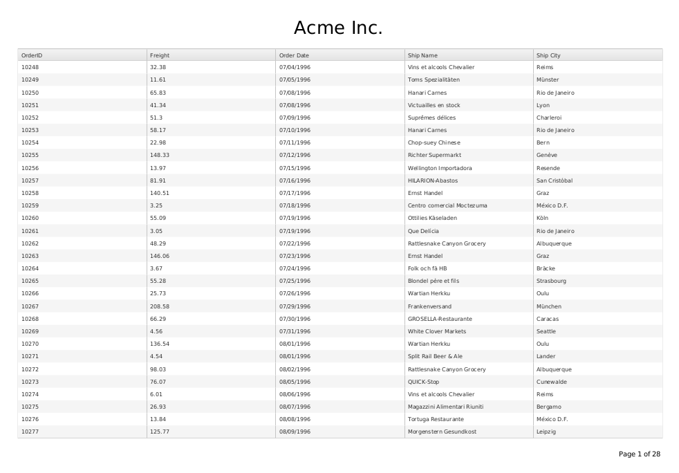

Custom PDF page layout
This example will show how to export a multi-page Grid and customize the page layout.
Our goal is to fit the grid in the center of the exported page. We'll also add a header and a footer that are not part of the original page.

The full code of the example follows with additional discussion in the comments.
Example - page layout
<!-- Load Pako ZLIB library to enable PDF compression -->
<script src="http://cdn.kendostatic.com/2015.1.429/js/pako_deflate.min.js"></script>
<script>
// Import DejaVu Sans font for embedding
// NOTE: Only required if the Kendo UI stylesheets are loaded
// from a different origin, e.g. cdn.kendostatic.com
kendo.pdf.defineFont({
"DejaVu Sans" : "http://cdn.kendostatic.com/2014.3.1314/styles/fonts/DejaVu/DejaVuSans.ttf",
"DejaVu Sans|Bold" : "http://cdn.kendostatic.com/2014.3.1314/styles/fonts/DejaVu/DejaVuSans-Bold.ttf",
"DejaVu Sans|Bold|Italic" : "http://cdn.kendostatic.com/2014.3.1314/styles/fonts/DejaVu/DejaVuSans-Oblique.ttf",
"DejaVu Sans|Italic" : "http://cdn.kendostatic.com/2014.3.1314/styles/fonts/DejaVu/DejaVuSans-Oblique.ttf"
});
</script>
<style>
/*
Use the DejaVu Sans font for display and embedding in the PDF file.
The standard PDF fonts have no support for Unicode characters.
*/
.k-grid {
font-family: "DejaVu Sans", "Arial", sans-serif;
}
/* Hide the Grid header and pager during export */
.k-pdf-export .k-grid-toolbar,
.k-pdf-export .k-pager-wrap
{
display: none;
}
</style>
<div id="grid"></div>
<script>
$("#grid").kendoGrid({
toolbar: ["pdf"],
pdf: {
allPages: true,
fileName: "Kendo UI Grid Export.pdf",
proxyURL: "http://demos.telerik.com/kendo-ui/service/export",
paperSize: "A4",
margin: "1cm",
landscape: true
},
pdfExport: function(e) {
e.promise.progress(function(e) {
// Fired for each page
// http://docs.telerik.com/kendo-ui/api/javascript/ui/grid#events-pdfExport
e.page = formatPage(e);
});
},
dataSource: {
type: "odata",
transport: {
read: "http://demos.telerik.com/kendo-ui/service/Northwind.svc/Orders"
},
schema: {
model: {
fields: {
OrderID: { type: "number" },
Freight: { type: "number" },
ShipName: { type: "string" },
OrderDate: { type: "date" },
ShipCity: { type: "string" }
}
}
},
pageSize: 30,
serverPaging: true,
},
pageable: true,
scrollable: true,
height: 550,
columns: [
{
field:"OrderID",
filterable: false
},
"Freight",
{
field: "OrderDate",
title: "Order Date",
format: "{0:MM/dd/yyyy}"
}, {
field: "ShipName",
title: "Ship Name"
}, {
field: "ShipCity",
title: "Ship City"
}
]
});
// Import Drawing API namespaces
var draw = kendo.drawing;
var geom = kendo.geometry;
// See
// http://docs.telerik.com/kendo-ui/framework/drawing/drawing-dom#dimensions-and-css-units-for-pdf-output
function mm(val) {
return val * 2.8347;
}
// A4 Sheet with 1 cm borders, landscape
var PAGE_RECT = new geom.Rect(
[mm(0), 0], [mm(297 - 20), mm(210 - 20)]
);
// Spacing between header, content and footer
var LINE_SPACING = mm(5);
function formatPage(e) {
var header = createHeader();
var content = e.page;
var footer = createFooter(e.pageNumber, e.totalPages);
// Remove header, footer and spacers from the page size
var contentRect = PAGE_RECT.clone();
contentRect.size.height -= header.bbox().height() + footer.bbox().height() + 2 * LINE_SPACING;
// Fit the content in the available space
draw.fit(content, contentRect)
// Do a final layout with content
var page = new draw.Layout(PAGE_RECT, {
// "Rows" go below each other
orientation: "vertical",
// Center rows relative to each other
alignItems: "center",
// Center the content block horizontally
alignContent: "center",
// Leave spacing between rows
spacing: LINE_SPACING
});
page.append(header, content);
page.reflow();
// Move the footer to the bottom-right corner
page.append(footer);
draw.vAlign([footer], PAGE_RECT, "end");
draw.align([footer], PAGE_RECT, "end");
return page;
}
function createHeader() {
return new kendo.drawing.Text("Acme Inc.", [0, 0], {
font: mm(8) + "px 'DejaVu Sans'"
});
}
function createFooter(page, total) {
return new kendo.drawing.Text(
kendo.format("Page {0} of {1}", page, total),
[0, 0], {
font: mm(3) + "px 'DejaVu Sans'"
}
);
}
</script>
Support for Unicode
By default the generated PDF file will use a standard set of fonts. This set does not include any Unicode characters.
The solution is to provide your own set of fonts for the export. Only the used subset of these fonts will be embedded in the PDF file.
This is why we include DejaVu in the demo.
See Custom fonts for details.